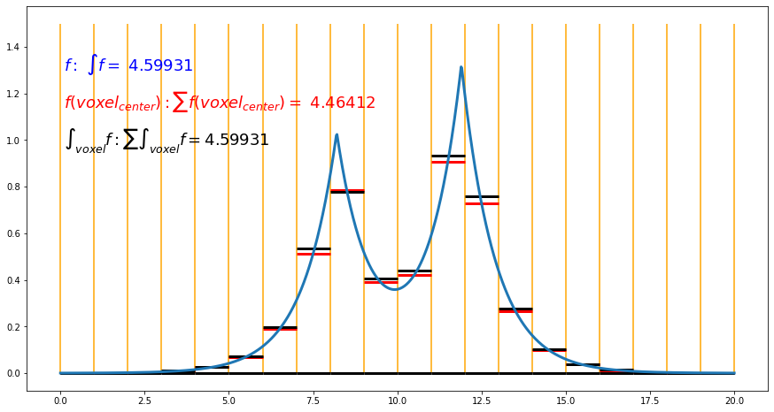

Introduction
Bader analysis is a widely used technique to decompose the charge density into contributions from individual atoms [Bader] [Tang] [Yu]. It belongs to the theory of atoms in molecules which helps explain the complex electronic interactions in molecules or materials. The electron density calculated by density functional theory is the most common object where Bader analysis working on. Especially, for the planewave pseudopotential codes such as VASP and Quantum Espresso, Bader analysis can be applied naturally on the electron density information saved in the Cube files, which are density values held on even distributed integration grids in periodic 3D space.
Difficulty with Cube file in all-electron full-potential code FHI-aims
FHI-aims is an all-electron full-potential code based on the numerical atom-centered orbital basis functions [Blum]. One advantage of FHI-aims implementation is the correct description of the cusp of the electron density in the core region near the nuclei. However, such cusps also raise a problem for the cube file output from the FHI-aims code. If we integrate the normal density information held in the cube file output by FHI-aims, the result can differ from the number of electrons in the system.
I plot a 1D example to explain the problem. 
As plotted in the figure, we have a 1D electron density function f defined from 0.0 to 20.0. Its integral is 4.59931, as shown in blue color in the figure. To mimic the cube file information, we evenly separate the space into 20 small "voxel" with a length of 1.0 as plotted in yellow vertical lines. The information saved in the cube files are then the values of the red vertical lines, which are the values of the f function at the center of voxels. The integral of the f function calculated in this way is then the summation of these values, which is 4.46412. It is close to but different from the exact integral. Such summation will be a good approximation if the f function is smooth as the electron density in the planewave pseudopotential code. For the electron density in FHI-aims code, the error can be significant due to the cusps.
Integral instead of value at the voxel center in FHI-aims with Cube file
We could record the integral in each voxel instead of the value at the voxel center in the cube file to solve the problem. As plotted in black, the integrals in each voxel are slightly different from the value at the voxel center, and the summation of these integrals results in the correct integration of the whole space. Note, to calculate the integrals in these small voxels; we can evaluate electron density adaptively in theory. However, electron density calculation from a density matrix is computationally relatively expensive. Note, the density difference between total density and free atom density at voxel center is a smooth quantity that can be captured in the normal cube file. We could evaluate a computationally efficient quantity, which is the free atom electron density. It is represented as the summation of spline functions centered at each atom. We can evaluate the free atom electron density adaptively to high accuracy. Thus, the output value for total density is
\(\rho_{total\ density}(voxel) = \rho_{total\ density}(voxel_{center}) - \rho_{free\ atom}(voxel_{center}) + \int_{voxel} \rho_{free\ atom}\)
Based on my test, the output cube files integrals to a value much closer to the total number of electrons in the system. I call the quantity integrable total density.
Inputs in FHI-aims
The keyword in FHI-aims to output the integrable total density is output cube total_density_integrable. Let me give two complete examples. One is the crystalline NaCl with 8 atoms in the unit cell, the other is the crystalline silicon with 8 atoms in the unit cell.
Example Crystalline NaCl
FHI-aims needs two files as inputs control.in and geometry.in.
control.in
# YY:WARNING just for test
# NEVER use the numerical setting here for productive run
#
# Physical settings
xc pw91_gga
spin none
# k-point grid
k_grid 4 4 4
KS_method serial ! ELSI lapack
preconditioner none
output cube total_density_integrable
cube edge 120 0.04737105709166667 0.0 0.0 # these are in unit Angstrom
cube edge 120 0.0 0.04737105709166667 0.0 # these are in unit Angstrom
cube edge 120 0.0 0.0 0.04737105709166667 # these are in unit Angstrom
cube divisor 10
cube_content_unit bohr
################################################################################
#
# FHI-aims code project
# Volker Blum, Fritz Haber Institute Berlin, 2009
#
# Suggested "intermediate" defaults for Na atom (to be pasted into control.in file)
#
# See https://aaltodoc.aalto.fi/handle/123456789/33620 for the report these
# setting are based on
################################################################################
species Na
# global species definitions
nucleus 11
mass 22.98976928
#
l_hartree 6
#
cut_pot 4.5 2.0 1.0
basis_dep_cutoff 1e-4
#
radial_base 40 7.0
radial_multiplier 2
angular_grids specified
division 0.5925 110
division 0.7843 194
division 1.0201 302
division 1.1879 434
# division 1.3799 590
# division 1.4503 770
# division 7.0005 974
# outer_grid 974
outer_grid 434
################################################################################
#
# Definition of "minimal" basis
#
################################################################################
# valence basis states
valence 3 s 1.
valence 2 p 6.
# ion occupancy
ion_occ 2 s 2.
ion_occ 2 p 6.
################################################################################
#
# Suggested additional basis functions. For production calculations,
# uncomment them one after another (the most important basis functions are
# listed first).
#
# Constructed for dimers: 2.0 A, 2.5 A, 3.0 A, 3.75 A, 4.5 A
#
################################################################################
# "First tier" - improvements: -60.09 meV to -10.02 meV
hydro 2 p 1.2
hydro 3 s 1.8
hydro 3 d 3.8
# "Second tier" - improvements: -2.94 meV to -1.27 meV
hydro 4 p 3.1
hydro 3 s 10
for_aux hydro 4 f 6.2
# hydro 4 d 1.3
# "Third tier" - improvements: -0.83 meV to -0.07 meV
# hydro 3 d 7.8
# hydro 3 p 2.3
# hydro 5 g 9.6
# hydro 4 p 0.85
# hydro 5 f 1.8
# hydro 2 s 0.6
# Further basis functions that fell out of the optimization - noise level...
# hydro 5 g 0.1
# hydro 4 d 3.4
# hydro 4 s 0.1
################################################################################
#
# FHI-aims code project
# Volker Blum, 2017
#
# Suggested "intermediate" defaults for Cl atom (to be pasted into control.in file)
#
################################################################################
species Cl
# global species definitions
nucleus 17
mass 35.453
#
l_hartree 6
#
cut_pot 4.0 2.0 1.0
basis_dep_cutoff 1e-4
#
radial_base 45 7.0
radial_multiplier 2
angular_grids specified
division 0.4412 110
division 0.5489 194
division 0.6734 302
division 0.7794 434
# division 0.9402 590
# division 1.0779 770
# division 1.1792 974
# outer_grid 974
outer_grid 434
################################################################################
#
# Definition of "minimal" basis
#
################################################################################
# valence basis states
valence 3 s 2.
valence 3 p 5.
# ion occupancy
ion_occ 3 s 1.
ion_occ 3 p 4.
################################################################################
#
# Suggested additional basis functions. For production calculations,
# uncomment them one after another (the most important basis functions are
# listed first).
#
# Constructed for dimers: 1.65 A, 2.0 A, 2.5 A, 3.25 A, 4.0 A
#
################################################################################
# "First tier" - improvements: -429.57 meV to -15.03 meV
ionic 3 d auto
hydro 2 p 1.9
hydro 4 f 7.4
ionic 3 s auto
for_aux hydro 5 g 10.4
# "Second tier" - improvements: -7.84 meV to -0.48 meV
# hydro 3 d 3.3
# hydro 5 f 9.8
# hydro 1 s 0.75
# hydro 5 g 11.2
# hydro 4 p 10.4
# "Third tier" - improvements: -1.00 meV to -0.12 meV
# hydro 4 d 12.8
# hydro 4 f 4.6
# hydro 4 d 10.8
# hydro 2 s 1.8
# hydro 3 p 3
# Further functions that fell out - improvements: -0.10 meV and below
# hydro 5 f 14.4
# hydro 4 s 12.8
# hydro 3 d 11.6
# hydro 4 s 4.1
geometry.in
lattice_vector 5.6845268510 0.0 0.0
lattice_vector 0.0 5.6845268510 0.0
lattice_vector 0.0 0.0 5.6845268510
atom_frac 0.75 0.25 0.25 Na
atom_frac 0.25 0.75 0.25 Na
atom_frac 0.25 0.25 0.75 Na
atom_frac 0.75 0.75 0.75 Na
atom_frac 0.25 0.25 0.25 Cl
atom_frac 0.75 0.75 0.25 Cl
atom_frac 0.75 0.25 0.75 Cl
atom_frac 0.25 0.75 0.75 Cl
Example Crystalline Silicon
control.in
# YY:WARNING just for test
# NEVER use the numerical setting here for productive run
#
# Physical settings
xc pbe
spin none
# k-point grid
k_grid 4 4 4
KS_method serial ! ELSI lapack
output cube total_density_integrable
cube divisor 10
cube_content_unit bohr
################################################################################
#
# FHI-aims code project
# Volker Blum, 2017
#
# Suggested "intermediate" defaults for Si atom (to be pasted into control.in file)
#
################################################################################
species Si
# global species definitions
nucleus 14
mass 28.0855
#
l_hartree 6
#
cut_pot 4.0 2.0 1.0
basis_dep_cutoff 1e-4
#
radial_base 42 7.0
radial_multiplier 2
angular_grids specified
division 0.4121 50
division 0.7665 110
division 1.0603 194
division 1.2846 302
division 1.4125 434
# division 1.4810 590
# division 1.5529 770
# division 1.6284 974
# division 2.6016 1202
# outer_grid 974
outer_grid 434
################################################################################
#
# Definition of "minimal" basis
#
################################################################################
# valence basis states
valence 3 s 2.
valence 3 p 2.
# ion occupancy
ion_occ 3 s 1.
ion_occ 3 p 1.
################################################################################
#
# Suggested additional basis functions. For production calculations,
# uncomment them one after another (the most important basis functions are
# listed first).
#
# Constructed for dimers: 1.75 A, 2.0 A, 2.25 A, 2.75 A, 3.75 A
#
################################################################################
# "First tier" - improvements: -571.96 meV to -37.03 meV
hydro 3 d 4.2
hydro 2 p 1.4
hydro 4 f 6.2
ionic 3 s auto
# "Second tier" - improvements: -16.76 meV to -3.03 meV
# hydro 3 d 9
for_aux hydro 5 g 9.4
# hydro 4 p 4
# hydro 1 s 0.65
# "Third tier" - improvements: -3.89 meV to -0.60 meV
# ionic 3 d auto
# hydro 3 s 2.6
# hydro 4 f 8.4
# hydro 3 d 3.4
# hydro 3 p 7.8
# "Fourth tier" - improvements: -0.33 meV to -0.11 meV
# hydro 2 p 1.6
# hydro 5 g 10.8
# hydro 5 f 11.2
# hydro 3 d 1
# hydro 4 s 4.5
# Further basis functions that fell out of the optimization - noise
# level... < -0.08 meV
# hydro 4 d 6.6
# hydro 5 g 16.4
# hydro 4 d 9
geometry.in
lattice_vector 5.43 0.0000000000000000 0.0000000000000000
lattice_vector 0.0000000000000000 5.43 0.0000000000000000
lattice_vector 0.0000000000000000 0.0000000000000000 5.43
atom 0.0000000000000000 0.0000000000000000 0.0000000000000000 Si
atom 1.3575000000000000 1.3575000000000000 1.3575000000000000 Si
atom 0.0000000000000000 2.7150000000000000 2.7150000000000000 Si
atom 1.3575000000000000 4.0725000000000000 4.0725000000000000 Si
atom 2.7150000000000000 0.0000000000000000 2.7150000000000000 Si
atom 4.0725000000000000 1.3575000000000000 4.0725000000000000 Si
atom 2.7150000000000000 2.7150000000000000 0.0000000000000000 Si
atom 4.0725000000000000 4.0725000000000000 1.3575000000000000 Si
How to perform Bader analysis on the output cube files
Codes exist to perform Bader analysis on cube files, here I have two recommendations. One is the Bader code by Henkelman's Group. The other is the Critic2 code by Alberto's Group.
Bader code
The way to run the Bader code is quite intuitive. Here is an example command line for the Bader analysis.
bader -vac 0 cube_001_total_density_integrable.cube
The output file ACF.dat shows the number of electrons associate with each atom. Here is the example of crystalline NaCl.
# X Y Z CHARGE MIN DIST ATOMIC VOL
--------------------------------------------------------------------------------
1 8.056649 2.685550 2.685550 10.134933 2.127317 66.679119
2 2.685550 8.056649 2.685550 10.134933 2.127317 66.679119
3 2.685550 2.685550 8.056649 10.134933 2.127317 66.679119
4 8.056649 8.056649 8.056649 10.134933 2.127313 66.679119
5 2.685550 2.685550 2.685550 17.863308 3.089009 242.798590
6 8.056649 8.056649 2.685550 17.865052 3.088990 243.331581
7 8.056649 2.685550 8.056649 17.866106 3.088990 243.652954
8 2.685550 8.056649 8.056649 17.864259 3.088990 243.081226
--------------------------------------------------------------------------------
VACUUM CHARGE: 0.0000
VACUUM VOLUME: 0.0000
NUMBER OF ELECTRONS: 111.9985
Critic2 code
The critic2 code is more versatile. It is basically a general code to perform all kinds of operators on some fields. Here we present a simple input for the same Bader analysis.
critic2.in
# Read the structure from any of the cube files
crystal cube_001_total_density_integrable.cube
# Load the electron density
load cube_001_total_density_integrable.cube id rho
# Use Bader.
bader
Then we run the code via commandline.
critic2 critic2.in > critic2.out
We can take a look at the critic2.out file.
* Integrated atomic properties
# (See key above for interpretation of column headings.)
# Integrable properties 1 to 3
# Id cp ncp Name Z mult Volume Pop Lap
1 1 1 Na 11 -- 6.66791186E+01 1.01349330E+01 2.37946134E-02
2 2 1 Na 11 -- 6.66791186E+01 1.01349330E+01 2.37946061E-02
3 3 1 Na 11 -- 6.66791186E+01 1.01349330E+01 2.37946091E-02
4 4 1 Na 11 -- 6.66791186E+01 1.01349330E+01 2.37946131E-02
5 5 2 Cl 17 -- 2.42798590E+02 1.78633076E+01 -2.72005475E-02
6 6 2 Cl 17 -- 2.43331581E+02 1.78650521E+01 -2.28806825E-02
7 7 2 Cl 17 -- 2.43652954E+02 1.78661064E+01 -2.02729109E-02
8 8 2 Cl 17 -- 2.43081226E+02 1.78642592E+01 -2.48243008E-02
--------------------------------------------------------------------------------
Sum 1.23958083E+03 1.11998457E+02 -7.66990638E-13
Clearly, the outputs from Bader and critic2 codes match with each other.
a side note about critic2 code
With critic2, we can calculate more quantities than the Bader integrals. For example, we can plot NCIPLOT with critic2 with the input critic2_nci.in
# Read the structure from any of the cube files
crystal cube_001_total_density_integrable.cube
# Load the electron density
load cube_001_total_density_integrable.cube id rho
#NCIplot
NCIPLOT
END
The result can be visualized in VMD via command vmd -e critic2_nci.vmd
For the crystalline NaCl here, this plot doesn't tell much. But, for systems with vdW interaction, hybrogen bond, or steric clashes, this plot can provide useful information.
Convergence of the integral in the integrable total density cube file output by FHI-aims.
An interesting observation I have for the cube file output is the integral of the integrable total density cube file has a convergence behavior. With the more accurate numerical settings the more accurate the total number of electrons is got. My suspicion is the normalization of the integration grid with different setting might play a role here. Without dense enough integration setting, the integration in the atom centered integration grid will introduce a normalization error which will pass to the total number of electrons calculated by the integration of the integrable total density cube file. Luckily, the error is relatively small and will reduce with a more strict numerical setting as I showed the results for both examples.
The convergence behavior for crystalline sillicon.
Numerical Setting |
Integral of integrable total density cube file |
|---|---|
| Minimal | 111.9851 |
| Light | 111.9909 |
| Intermediate | 111.9966 |
| Tight | 111.9965 |
| Really tight | 111.9998 |
The convergence behavior for crystalline NaCl.
Numerical Setting |
Integral of integrable total density cube file |
Charge on Na |
Charge on Cl |
|---|---|---|---|
| Minimal | 111.9968 | 0.8665 | -0.8657 |
| Light | 111.9970 | 0.8645 | -0.8638 |
| Intermediate | 111.9985 | 0.8651 | -0.8647 |
| Tight | 111.9984 | 0.8653 | -0.8649 |
| Really tight | 111.9991 | 0.8653 | -0.8651 |